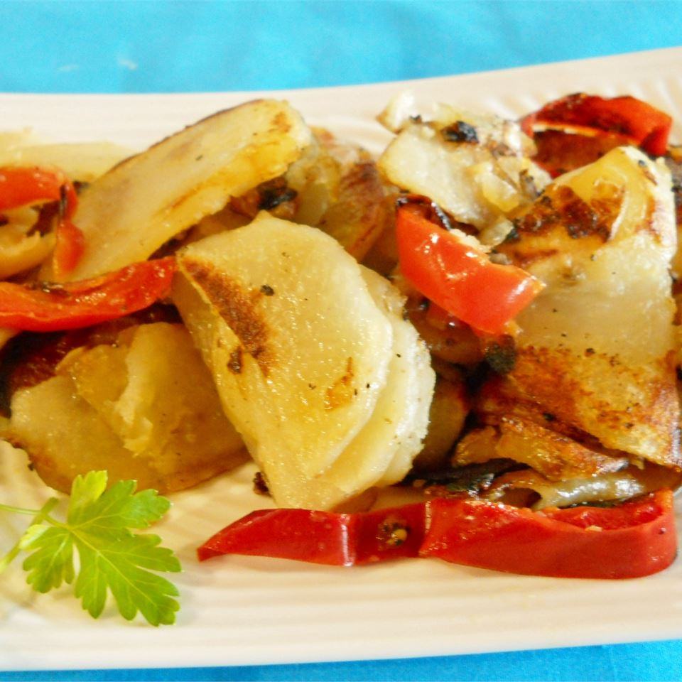

Potatoes and Peppers

Description
This dish is a classic: Easy, filling, and very tasty!
I served it as a side with grilled shrimp and corn on the cob and it was a huge hit.
Would also be good at breakfast instead of hash browns.
Ingredients:
- ⅓ cup olive oil
- 6 potatoes, sliced
- 2 large red bell peppers, sliced into rings
- 1 cup packed brown sugar
- 1 large sweet onion, peeled and chopped
- salt and pepper to taste
Directions
- Heat oil in a large frying pan over medium-high heat.
- Fry the potatoes for 5 minutes, then add the peppers and onions.
- Add season with salt and pepper.
- Cook for at least 15 minutes, turning potatoes frequently, or until potatoes start to look mushy.